Building Automation
Industrial Automation
Power Automation & Safety


Bangladesh Distributor
Measuring & Monitoring relays
A lineup of DeviceNet-compatible Motor Protective Relays and Relays for motor/transformer protections, three-phase motor reverse operation prevention, and motor/heater burnout protection.
Measuring & Monitoring relays List
There are 29 products of Measuring & Monitoring relays.
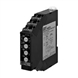 Single-phase Current Relay K8DT-AS
Our Value Design Products Increase the Value of Your Control Panels. Detect errors in motors and other equipment through current changes. Use in either overcurrent or undercurrent mode.
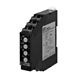 Single-phase Overcurrent/Undercurrent Relay K8DT-AW
Our Value Design Products Increase the Value of Your Control Panels. Detect errors in motors and other equipment through current changes. Monitor for overcurrents and undercurrents simultaneously with one Relay.
Single-phase Voltage Relay K8DT-VS
Our Value Design Products Increase the Value of Your Control Panels. Detect abnormal voltages applies to equipment to protect against equipment failure. Use in either overvoltage or undervoltage mode.
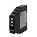 Single-phase Overvoltage/Undervoltage Relay K8DT-VW
Our Value Design Products Increase the Value of Your Control Panels. Detect abnormal voltages applies to equipment to protect against equipment failure. Monitor for overvoltages and undervoltages simultaneously with one Relay.
Phase-sequence Phase-loss Relay K8DT-PH
Our Value Design Products Increase the Value of Your Control Panels. Protect motors and other equipment from unstable voltages in the power supply system. Protect motors and other equipment by detecting phase sequence and phase loss for three-phase power supplies.
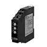 Three-phase Voltage and Phase-sequence Phase-loss Relay K8DT-PM
Our Value Design Products Increase the Value of Your Control Panels. Protect motors and other equipment from unstable voltages in the power supply system. Protect motors and other equipment by detecting overvoltages, undervoltages, phase sequence, and phase loss for three-phase power supplies.
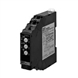 Three-phase Voltage, Asymmetry, and Phase-sequence Phase-loss Relay K8DT-PZ
Our Value Design Products Increase the Value of Your Control Panels. Protect motors and other equipment from unstable voltages in the power supply system. Detect overvoltages, undervoltages, voltage asymmetry, phase sequence, and phase loss for three-phase power supplies.
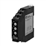 Temperature Monitoring Relay K8DT-TH
Our Value Design Products Increase the Value of Your Control Panels. Ideal to prevent heater overheating. Self-latching output to contribute to safe equipment operation.
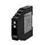 Conductive Level Controller K8DT-LS
Our Value Design Products Increase the Value of Your Control Panels. Ideal for water level control. Sensitivity adjustment and timer for easy usage.
 Single-phase Current Relay
K8AK-AS
Single-phase Current Relay
K8AK-AS
Ideal for Current Monitoring for Industrial Facilities and Equipment. Monitor for overcurrents or undercurrents.
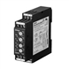 Single-phase Overcurrent/Undercurrent Relay K8AK-AW
Ideal for Current Monitoring for Industrial Facilities and Equipment. Monitor for overcurrents and undercurrents simultaneously.
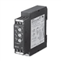 Single-phase Voltage Relay K8AK-VS
Ideal for Voltage Monitoring for Industrial Facilities and Equipment. Monitor for overcurrents or undercurrents.
 Single-phase Overvoltage/Undervoltage Relay
K8AK-VW
Single-phase Overvoltage/Undervoltage Relay
K8AK-VW
Ideal for Voltage Monitoring for Industrial Facilities and Equipment. Monitor for overcurrents and undercurrents simultaneously.
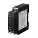 Phase-sequence Phase-loss Relay K8AK-PH
Three-phase Phase-sequence Phase-loss Relay Using Voltage Detection Method. 22.5 mm (W). Two SPDT output relays
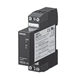 Phase-sequence Phase-loss Relay K8DS-PH
Three-phase Phase-sequence Phase-loss Relay Using Voltage Detection Method. 17.5 mm (W). One SPDT output relays
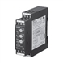 Three-phase Voltage and Phase-sequence Phase-loss Relay K8AK-PM
Ideal for Monitoring 3-phase Power Supplies for Industrial Facilities and Equipment. 22.5 mm (W). Two SPDT output relays
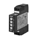 Three-phase Voltage and Phase-sequence Phase-loss Relay K8DS-PM
Ideal for Monitoring 3-phase Power Supplies for Industrial Facilities and Equipment. 17.5 mm (W). One SPDT output relays
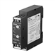 Three-phase Asymmetry and Phase-sequence Phase-loss Relay K8AK-PA
Ideal for 3-phase Voltage Asymmetry Monitoring for Industrial Facilities and Equipment. 22.5 mm (W). One SPDT output relays
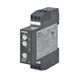 Three-phase Asymmetry and Phase-sequence Phase-loss Relay K8DS-PA
Ideal for 3-phase Voltage Asymmetry Monitoring for Industrial Facilities and Equipment. 17.5 mm (W). One SPDT output relays
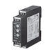 Three-phase Voltage Relay K8AK-PW
Ideal for Monitoring 3-phase Power Supplies for Industrial Facilities and Equipment. 22.5 mm (W). Two SPDT output relays
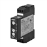 Three-phase Undervoltage and Phase-sequence Phase-loss Relay K8DS-PU
Ideal for Monitoring 3-phase Power Supplies for Industrial Facilities and Equipment. 17.5 mm (W). One SPDT output relays
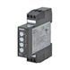 Three-phase Voltage, Asymmetry, and Phase-sequence Phase-loss Relay K8DS-PZ
Ideal for Monitoring 3-phase Power Supplies for Industrial Facilities and Equipment. 17.5 mm (W). One SPDT output relays
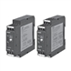 Thermistor Motor Protection Relay K8AK-TS / PT
Monitor Temperature Rise through Internal Motor Loss
 Conductive Level Controller
K8AK-LS
Conductive Level Controller
K8AK-LS
Ideal for Liquid Level Control in Industrial Facilities and Equipment.
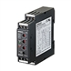 Temperature Monitoring Relay K8AK-TH
Compact and Slim Relay Ideal for Temperature Alarms and Monitoring
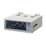 Motor Protective Relay K2CM
Solid-state Relay Enables Choice of Three Operating Functions (Overcurrent, Openphase,and Reverse-phase)
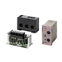 Motor Protective Relay SE
Solid-state Relay Provides Three Operating Functions in a Compact Package
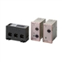 Current Sensor SAO
Solid-state, Plug-in Current Sensor
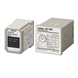 Reverse Protection Relay APR-S
Uses Voltage Detection to Determine Reverse Revolution of Three-phase Motor
Related Contents
- Measuring / Motor Protective Relays